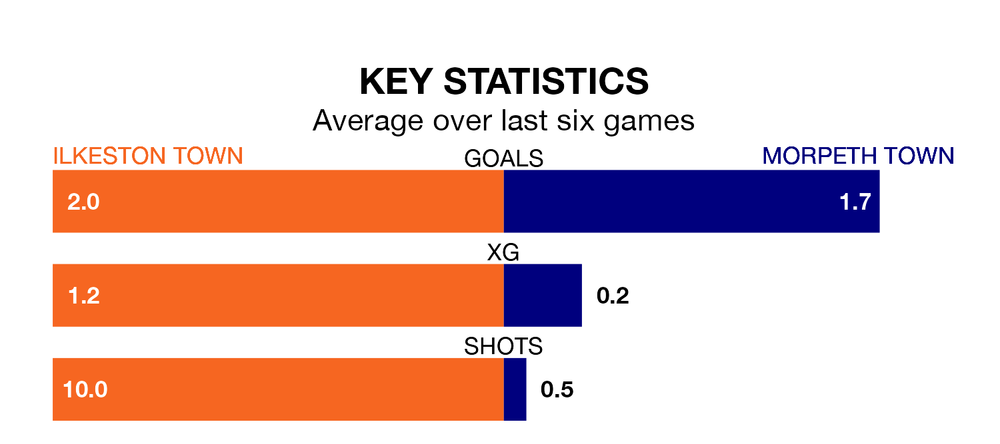

Ilkeston Town are heavy favourites to keep all three points at home in Saturday's kick-off against Morpeth Town.
Ilkeston, who sit ninth in the Northern Premier League with 39 games played, are priced at 1.6 to seal victory at the New Manor Ground.
Sitting four places and seven points behind them in the table, Morpeth are 4.4 to win with *Betting Company*, while the draw is at 4.2.
With 71 goals in 38 games so far this season, Morpeth are scoring more than average in the league with 1.9 goals per game. But they are conceding more than average too, letting in 73 goals at a rate of 1.9 per game.
Ilkeston are also above average scorers, with 1.7 goals per game, compared to a league average of 1.6. They have conceded 1.5 goals per game.
Ilkeston Town are in good form in the Northern Premier League, with four wins and two draws from their last six games.
With three wins and three losses over that period, Morpeth Town's form is worse – they have taken nine points from 18, compared to the home side's 14.
Ilkeston's last match was on April 13, a 2-1 win against Ashton United.
Morpeth beat Worksop Town 4-0 last time out, also on April 13.
Updated: 15:40 (UTC), 18/04/24